KINELOAD · physical prototype built · September 2026
Suspended-Load Energy-Harvesting Backpack
I joined this University of Auckland research project after earlier students had explored suspended-load backpack mechanisms and the research group had developed a bidirectional rotating electromagnetic generator. I designed and built the suspended-load platform shown below: the full backpack CAD and mechanical design, laser-cut acrylic plates, 3D-printed parts, a welded generator support structure, and all of the wiring on the group's generator prototype. I also participated in doctoral-researcher-led testing and device demonstrations.
Research Snapshot
Backpack CAD and mechanical design, laser cutting, 3D printing, welding, assembly, all generator wiring and electrical fault-finding.
Developed within the University of Auckland Mechanical and Mechatronics Engineering research group.
The generator belongs to the group's prior work; I do not present its design as my own.
Relative vertical payload motion is transmitted to the generator through a direct mechanical path.
My completed platform appears on slide 10 of the KINELOAD CICSIC 2026 presentation.
Doctoral researchers led the bench tests, storage-assisted phone charging and pulse-oximeter demonstrations.
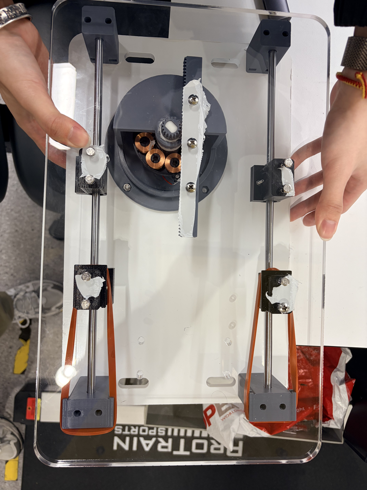
How the Mechanism Works
- The rear plate is fixed to the backpack frame and follows the wearer's torso.
- The front plate carries the suspended load and translates vertically on two guide rods.
- Walking creates relative motion between the fixed frame and moving load plate.
- A rack attached to the moving plate drives a pinion coupled to the group's existing generator.
- Elastic bands support the payload in the current physical build, replacing the earlier spring-layout concept.
Work Completed So Far
Engineering Deliverables
- Reviewed the group's earlier student reports and separated prior generator work from the new mechanical platform.
- Built a modular SolidWorks assembly around a fixed rear plate and moving payload plate.
- Built the guide, rack, pinion and generator-mount interfaces for the physical platform.
- Prepared an exploded view, bilingual BOM, motion views and manufacturing layouts.
- Exported plate DXFs and laser-cut the acrylic plates; kept a fixed mounting-hole pattern so the drive can be upgraded without recutting the plates.
- 3D-printed parts, welded the generator support structure and assembled the platform.
- Wired every coil on the group's generator prototype and brought the coils together to a single output.
- Learned to account for printed-part clearance when a nominal 5 mm hole did not accept an M5 bolt.
- Participated in doctoral-researcher-led bench testing and demonstrations of storage-assisted phone charging and pulse-oximeter operation.
How the Work Moves Forward
This project depends on communication, not only CAD. I review mechanism choices with my supervisor and previous students, then speak with technicians in different university labs and workshops about cutting, printing, assembly access and practical tolerances. Their feedback becomes the next CAD revision or test.
Fault-Finding: When the Generator Gave No Output
- Symptom. After assembly, the generator produced no output at the terminals.
- Method. The coils are wired together to one output, so a single break anywhere kills the whole circuit. I checked continuity with a multimeter joint by joint along the coil chain instead of guessing.
- Cause. A coil lead had been worn through by friction against an internal contact surface.
- Result. After the repair, the output came back.
The Prototype in Use
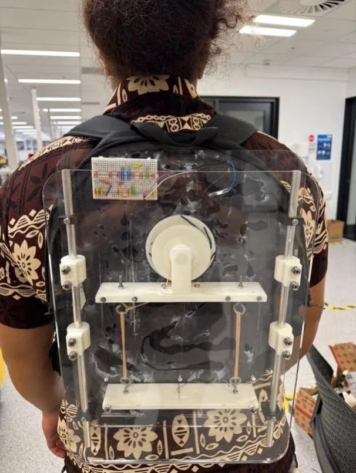
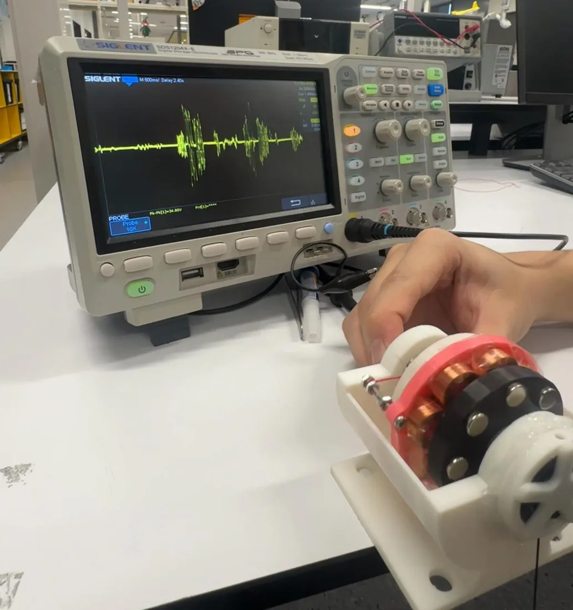
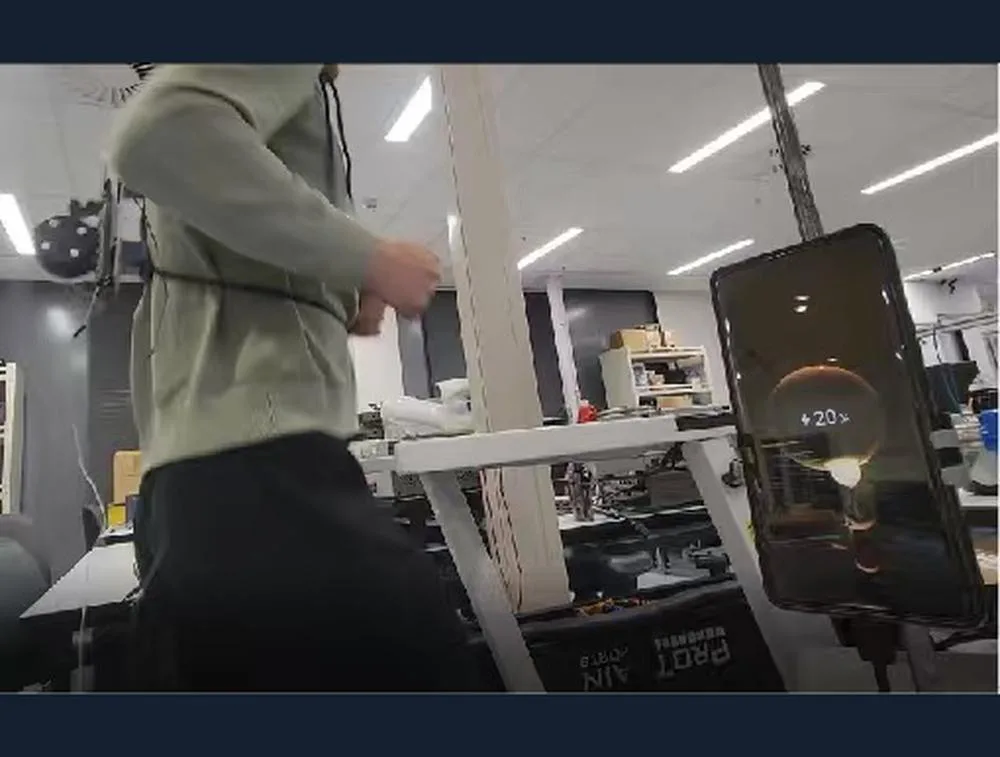
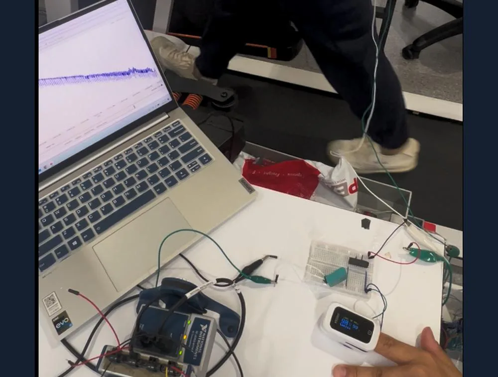
Design Evidence
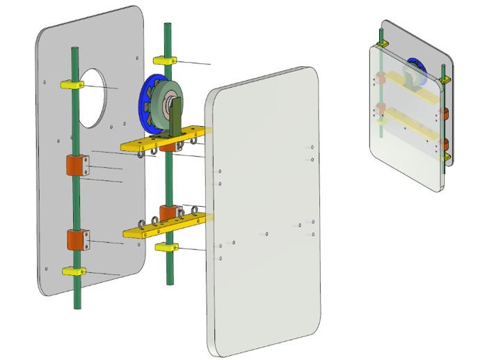
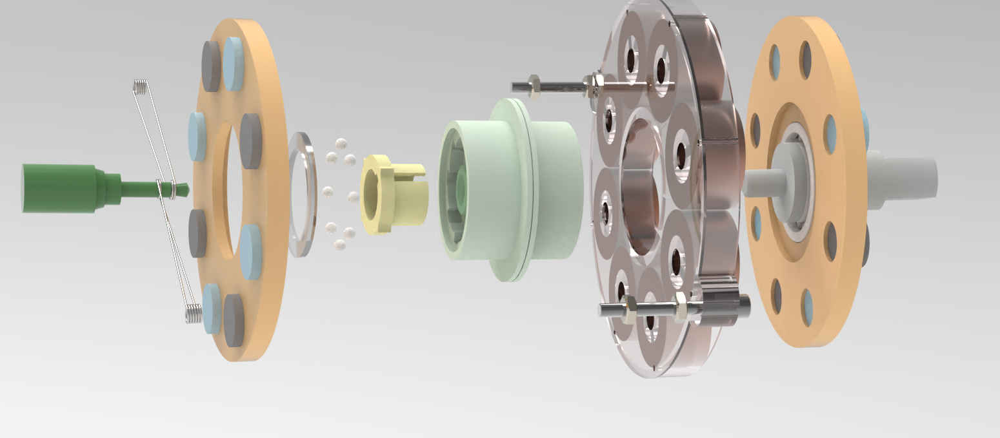
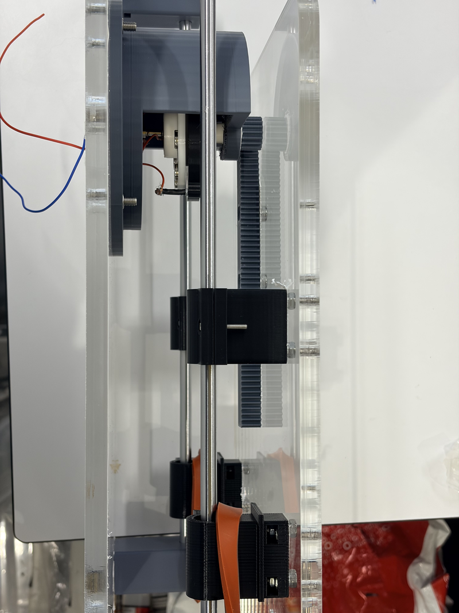
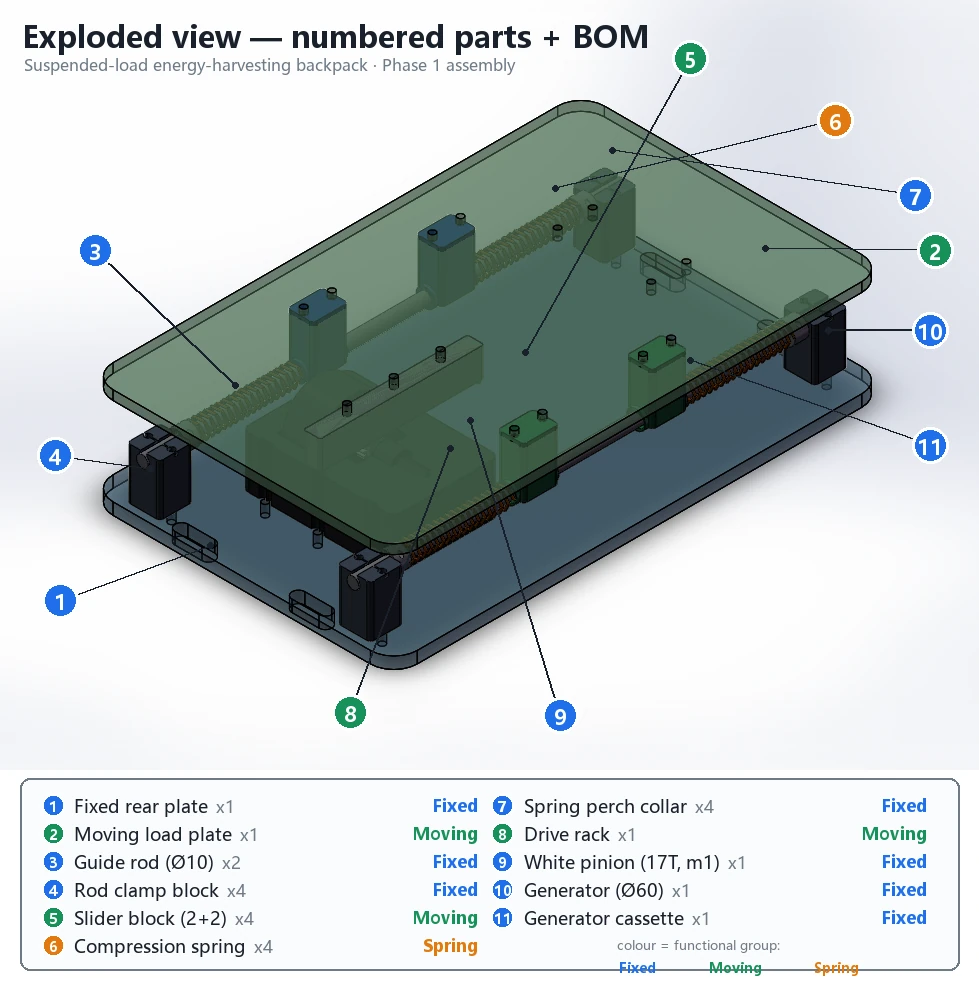
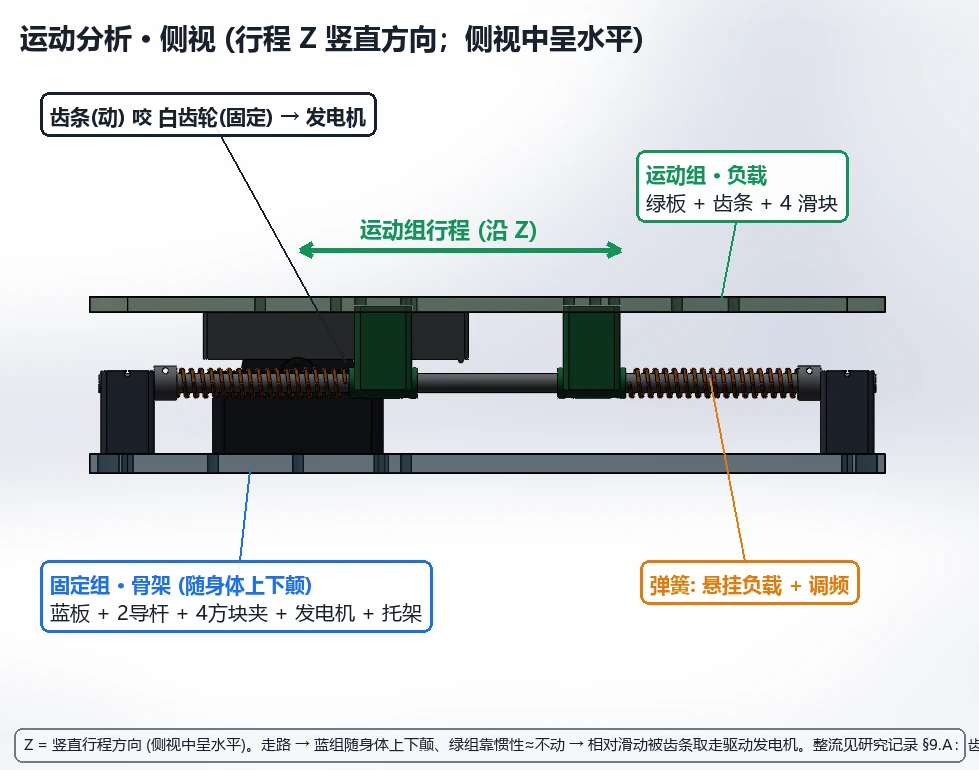
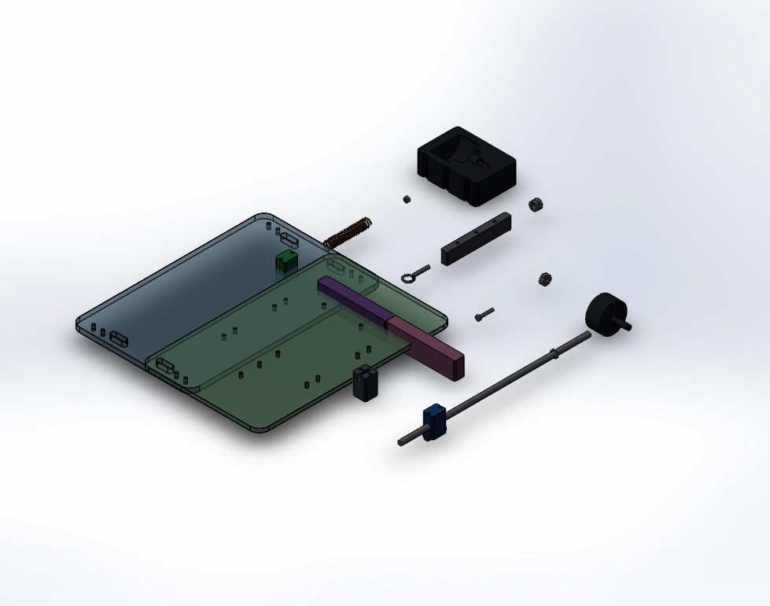
Verification Boundary
Next Validation Steps
- Document repeatable travel, friction, alignment and hard-stop checks on the assembled platform.
- Compare elastic-band settings under matched excitation.
- Separate generator output from energy delivered by the storage stage.
- Check support and electrical pickup reliability over repeated motion.
- Add representative payloads and record displacement during controlled walking tests.
- Measure electrical output only after the mechanical motion is repeatable.
Native CAD and detailed research records are maintained within the active supervised project. Selected evidence is shown publicly here while the built prototype undergoes further development and validation.